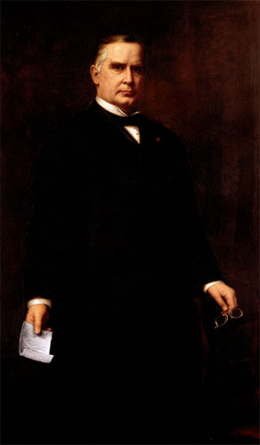
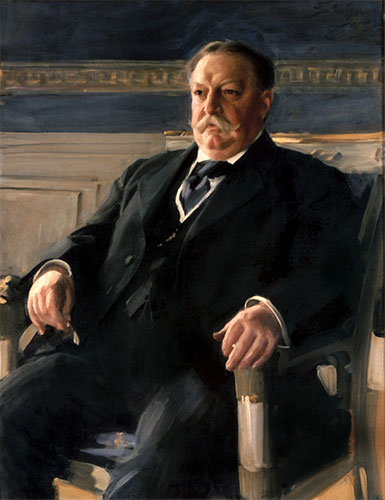

<html>

<head>
    <link rel="stylesheet" href="leaflet.css" />
    <link rel="stylesheet" href="styles.css" />
  <!--  <script src="https://unpkg.com/leaflet@1.0.0-rc.3/dist/leaflet.js"></script>-->
    <script src="leaflet-src.js"></script>
    <script src="https://use.fontawesome.com/8c3a144451.js"></script>
    <link href="https://fonts.googleapis.com/css?family=Roboto" rel="stylesheet">
</head>

<body>
    <div id="mapid"></div>


    <script>
        var mymap = L.map('mapid').setView([40.445109514941606, -81.00774037625682], 7);

        var LeafIcon = L.Icon.extend({
            options: {
                shadowUrl: 'images/shadow.png',
                iconSize: [50, 57], // size of the icon
                shadowSize: [45, 47], // size of the shadow
                iconAnchor: [22, 94], // point of the icon which will correspond to marker's location
                shadowAnchor: [20, 42], // the same for the shadow
                popupAnchor: [20, -40] // point from which the popup should open relative to the iconAnchor
            }
        });

        var bluePin = new LeafIcon({
                iconUrl: 'images/blue_pin.png'
            }),
            redPin = new LeafIcon({
                iconUrl: 'images/red_pin.png'
            }),
            whitePin = new LeafIcon({
                iconUrl: 'images/white_pin.png'
            });


        L.tileLayer('https://api.mapbox.com/styles/v1/justinemeyer/cit0xlxms000g2xpno6jwf7qk/tiles/256/{z}/{x}/{y}?access_token=pk.eyJ1IjoianVzdGluZW1leWVyIiwiYSI6ImNpdDBmMGNydzBsbnUyb3BnMDg3eDdxbGQifQ.WCE4n-SzTN7IWQ3uVzFnQA', {
            maxZoom: 13,
            attribution: 'Map data &copy; <a href="http://openstreetmap.org">OpenStreetMap</a> contributors, ' +
                '<a href="http://creativecommons.org/licenses/by-sa/2.0/">CC-BY-SA</a>, ' +
                'Imagery © <a href="http://mapbox.com">Mapbox</a>',
            id: 'mapbox.streets'
        }).addTo(mymap);


        L.marker([41.663978, -81.350977], {
                icon: bluePin
            }).addTo(mymap)
            .bindPopup(
                "<i class='fa fa-institution fa-2x' aria-hidden='true'></i>" +
                "<br/><h1>James Garfield<br>" +
                "<span class='subheading'>20<sup>th</sup> President</span></h1><br/>" +
                "<div class='hrdiv'><hr class='style18'/></div><h2>James A. Garfield National Historic Site</h2>" +
                "<p>A front porch can serve many purposes. For some, a place to enjoy the breeze on a warm summer night. For others, a perch from which to keep eyes on what's " +
                "happening in their neighborhood. In 1880, James Garfield used his front porch as a platform to greet thousands of well-wishers during his presidential campaign." +
                " Today, the porch serves as a gateway to the story of the Garfield family.</p>" +
                "<a href='https://www.nps.gov/jaga/index.htm' target='_blank'>Official Webpage</a> <br/>" +
                "<a href='http://www.pbs.org/wgbh/americanexperience/features/biography/presidents-garfield/' target='_blank'>American Experience: Presidential Biography</a> <br/>" +
                "<a href='http://www.pbs.org/wgbh/americanexperience/films/garfield/player/' target='_blank'>American Experience: Murder of a President</a> <br/>" +
                "<a href='http://pbslearningmedia.org/resource/b98d7dbb-a7bf-468c-aefa-9c0314d908b5/james-a-garfield-60-second-presidents/' target='_blank'>60-Second Presidents</a> <br/>"
            );

        L.marker([38.894433, -84.232621], {
                icon: bluePin
            }).addTo(mymap)
            .bindPopup(
              "<i class='fa fa-institution fa-2x' aria-hidden='true'></i>" +
                "<br/><h1>Ulysses S. Grant<br>" +
                "<span class='subheading'>18<sup>th</sup> President</span></h1><br/>" +
                "<div class='hrdiv'><hr class='style18'/></div><h2>Ulysses S. Grant Birthplace</h2>" +
                "<p>Ulysses S. Grant, eighteenth president of the United States, was not born in a log cabin.  However, his birth on April 27, 1822 in a quiet" +
                " and unpretentious Ohio River hamlet and early childhood in nearby Georgetown, Ohio, established in him a kinship " +
                "and identification with the people he would one day serve as President. The small frame cottage in Point Pleasant was the birthplace " +
                "of the first child of tanner Jesse Grant and his wife, Hannah. The cottage was the home of the Grant family for less" +
                "than a year before Jesse, having saved the money he earned as a tanner, built a tannery of his own in the Brown county seat, Georgetown.</p>" +
                "<a href='http://www.usgrantbirthplace.org/' target='_blank'>Official Webpage</a><br/>" +
                "<a href='http://pbslearningmedia.org/resource/arct14.soc.amexpregra/the-presidents-biography-18-ulysses-s-grant/' target='_blank'>American Experience: Presidential Biography</a> <br/>" +
                "<a href='http://www.pbs.org/wgbh/americanexperience/features/introduction/grant-introduction/' target='_blank'>American Experience: U.S. Grant, Warrior</a> <br/>" +
                "<a href='http://pbslearningmedia.org/resource/cb9a5c89-3e36-4b78-85d5-c6ddc15d08e8/ulysses-s-grant-60-second-presidents/' target='_blank'>60-Second Presidents</a> <br/>"

            );

        L.marker([38.865887, -83.901877], {
                icon: bluePin
            }).addTo(mymap)
            .bindPopup(
                "<i class='fa fa-institution fa-2x' aria-hidden='true'></i>" +
                "<br/><h1>Ulysses S. Grant<br>" +
                "<span class='subheading'>18<sup>th</sup> President</span></h1><br/>" +
                "<div class='hrdiv'><hr class='style18'/></div><h2>Ulysses S. Grant Boyhood Home &amp; Schoolhouse</h2>" +
                "<p>The boyhood home of Ulysses S. Grant was built in 1823, with additions to the home made in 1825 and 1828, and many more times after it was sold in 1840's. " +
                " Designated a National Historic Landmark, it was opened for visitors in 1982. Nearby, the two-room school attended by Ulysses Grant" +
                " was built in 1829 and served as Georgetown's only schoolhouse for over twenty years until it was replaced in 1852. </p>" +
                "<a href='http://www.usgrantboyhoodhome.org/' target='_blank'>Official Webpage</a><br/>" +
                "<a href='http://pbslearningmedia.org/resource/arct14.soc.amexpregra/the-presidents-biography-18-ulysses-s-grant/' target='_blank'>American Experience: Presidential Biography</a> <br/>" +
                "<a href='http://www.pbs.org/wgbh/americanexperience/features/introduction/grant-introduction/' target='_blank'>American Experience: U.S. Grant, Warrior</a> <br/>" +
                "<a href='http://pbslearningmedia.org/resource/cb9a5c89-3e36-4b78-85d5-c6ddc15d08e8/ulysses-s-grant-60-second-presidents/' target='_blank'>60-Second Presidents</a> <br/>"

            );

        L.marker([40.586518, -83.131622], {
                icon: bluePin
            }).addTo(mymap)
            .bindPopup(
                "<i class='fa fa-institution fa-2x' aria-hidden='true' style='float:right;'></i>" +
                "<br/><h1>Warren G. Harding<br>" +
                "<span class='subheading'>29<sup>th</sup> President</span></h1><br/>" +
                "<div class='hrdiv'><hr class='style18'/></div><h2 style='clear:both;'>Warren G. Harding Home</h2>" +
                "<p>The Harding Collections located in Marion, OH encompass more than 5,000 original items, including 300" +
                " from the White House. Because most of what you'll see in the home is original, you'll get the feeling that" +
                " Warren G. and Florence Harding have just stepped into the next room. </p>" +
                "<a href='http://www.hardinghome.org/' target='_blank'>Official Webpage</a><br/>" +
                "<a href='http://www.pbs.org/wgbh/americanexperience/features/biography/presidents-harding/' target='_blank'>American Experience: Presidential Biography</a> <br/>" +
                "<a href='http://www.pbslearningmedia.org/resource/0b0838f3-0b23-4c8e-a2a5-3d9e69bc9924/warren-g-harding-60-second-presidents/' target='_blank'>60-Second Presidents</a> <br/>"

            );

        L.marker([41.340794, -83.130361], {
                icon: bluePin
            }).addTo(mymap)
            .bindPopup(
                "<i class='fa fa-institution fa-2x' aria-hidden='true' style='float:right;'></i>" +
                "<br/><h1>Rutherford B. Hayes<br>" +
                "<span class='subheading'>19<sup>th</sup> President</span></h1><br/>" +
                "<div class='hrdiv'><hr class='style18'/></div><h2>Rutherford B. Hayes Presidential Center</h2>" +
                "<p>The Hayes Presidential Center includes the home, library, museum, tomb, and 25-acre estate (called Spiegel Grove) " +
                "of 19th U.S. President Rutherford B. Hayes. Entrance to the property is through one of six sets of original White House gates.</p>" +
                "<a href='http://www.rbhayes.org/' target='_blank'>Official Webpage</a><br/>" +
                "<a href='http://www.pbs.org/wgbh/americanexperience/features/biography/presidents-hayes/' target='_blank'>American Experience: Presidential Biography</a> <br/>" +
                "<a href='http://pbslearningmedia.org/resource/2f968956-a131-4c98-8577-75249914b4b1/rutherford-b-hayes-60-second-presidents/' target='_blank'>60-Second Presidents</a> <br/>"

            );

        L.marker([41.180996, -80.766069], {
                icon: bluePin
            }).addTo(mymap)
            .bindPopup(
                "<i class='fa fa-institution fa-2x' aria-hidden='true' style='float:right;'></i>" +
                "<br/><h1>William McKinley<br>" +
                "<span class='subheading'>25<sup>th</sup> President</span></h1><br/>" +
                "<div class='hrdiv'><hr class='style18'/></div><h2 style='clear: both;'>William McKinley Birthplace Museum</h2>" +
                "<p>The museum's collections feature memorabilia from the Civil and Spanish American wars, objects from McKinley's campaigns" +
                " and presidencies and from the building of the memorial. Other objects on display include mannequins of  President and " +
                "Mrs. McKinley in a sleigh, a spinning wheel owned by the McKinley family, a piano owned by the President's mother, and a law desk belonging to the late president. </p>" +
                "<a href='https://mckinleybirthplacemuseum.org/' target='_blank'>Official Webpage</a><br/>" +
                "<a href='http://www.pbs.org/wgbh/americanexperience/features/biography/presidents-mckinley/' target='_blank'>American Experience: Presidential Biography</a> <br/>" +
                "<a href='http://pbslearningmedia.org/resource/17c43d40-961e-4408-a8a6-62524f30673a/william-mckinley-60-second-presidents/' target='_blank'>60-Second Presidents</a> <br/>"

            );

        L.marker([40.806410, -81.392517], {
                icon: bluePin
            }).addTo(mymap)
            .bindPopup(
              "<i class='fa fa-institution fa-2x' aria-hidden='true'></i>" +
              "<br/><h1>William McKinley<br>" +
              "<span class='subheading'>25<sup>th</sup> President</span></h1><br/>" +
              "<div class='hrdiv'><hr class='style18'/></div><h2 style='clear:both;'>William McKinley Presidential Library &amp; Museum</h2>" +
                "<p>The museum includes an interactive, hands-on science center," +
                " a presidential museum dedicated to our 25th president, a historical library, planetarium and more. The location also " +
                "includes the tomb of the late President, the McKinley National Memorial.</p>" +
                "<a href='http://mckinleymuseum.org/' target='_blank'>Official Webpage</a><br/>" +
                "<a href='http://www.pbs.org/wgbh/americanexperience/features/biography/presidents-mckinley/' target='_blank'>American Experience: Presidential Biography</a> <br/>" +
                "<a href='http://pbslearningmedia.org/resource/17c43d40-961e-4408-a8a6-62524f30673a/william-mckinley-60-second-presidents/' target='_blank'>60-Second Presidents</a> <br/>"

            );

        L.marker([39.119812, -84.508215], {
                icon: bluePin
            }).addTo(mymap)
            .bindPopup(
              "<i class='fa fa-institution fa-2x' aria-hidden='true' style='float:right;'></i>" +
                "<br/><h1>William Howard Taft<br>" +
                "<span class='subheading'>27<sup>th</sup> President</span></h1><br/>" +
                "<div class='hrdiv'><hr class='style18'/></div><h2>William Howard Taft National Historic Site</h2>" +
                "<p>High atop one of Cincinnati's most prominent hilltops stands the two-story Greek Revival house where William Howard Taft " +
                "was born and grew up. Hard work, a good education, and an interest in civic duty are attributes that made the Taft family " +
                "outstanding leaders over the years. The environment that shaped Taft's character and philosophy  is highlighted  on a visit to the site.</p>" +
                "<a href='https://www.nps.gov/wiho/index.htm' target='_blank'>Official Webpage</a> <br/>" +
                "<a href='http://www.pbs.org/wgbh/americanexperience/features/biography/presidents-taft/' target='_blank'>American Experience: Presidential Biography</a> <br/>" +
                "<a href='http://pbslearningmedia.org/resource/aa2a2a07-faee-4cd8-b7a1-3b7b2a1163e5/william-howard-taft-60-second-presidents/' target='_blank'>60-Second Presidents</a> <br/>"

            );

        L.marker([40.796567, -81.375730], {
                icon: bluePin
            }).addTo(mymap)
            .bindPopup(
                "<i class='fa fa-institution fa-2x' aria-hidden='true'></i>" +
                "<br/>" +
                "<h2>National First Ladies' Library</h2><div class='hrdiv'><hr class='style18'/></div>" +
                "<p>As the first and only facility of its kind, the National First Ladies' Library serves as a unique national resource for patrons " +
                "from school children to serious scholars.  As a national archive devoted to educating people about the contributions of First Ladies " +
                "and other notable women in history, the Library's holdings fill an informational void that has long frustrated academicians and armchair " +
                "history buffs alike.  The Library fulfills this mission by serving as a physical educational facility and an electronic virtual library, " +
                "in an effort to educate people in the United States and around the world.</p>" +
                "<a href='http://www.firstladies.org/' target='_blank'>Official Webpage</a> <br/>"
            );

        L.marker([41.513450, -81.588917], {
                icon: redPin
            }).addTo(mymap)
            .bindPopup(
              "<i class='fa fa-bookmark fa-2x' aria-hidden='true'></i>" +
              "<br/><h1>James Garfield<br>" +
              "<span class='subheading'>20<sup>th</sup> President</span></h1><br/>" +
              "<div class='hrdiv'><hr class='style18'/></div><h2>James A. Garfield Tomb</h2>" +
                "<p>Designed by architect George Keller, the Garfield Monument was dedicated on Memorial Day, 1890. The Garfield Monument stands 180 feet tall  " +
                "and is constructed of Berea Sandstone. Around the exterior of the balcony are five, terra cotta panels by Casper Bubel, with over " +
                "110 figures all life size, depicting Garfield's life and death. The panels include Garfield as a teacher, as Major General in the Civil War, " +
                "an orator, taking the oath of office and lying in state in the rotunda of the Capital in Washington DC.</p>" +
                "<a href='https://lakeviewcemetery.com/visit/points-of-interest/james-a-garfield-memorial/#.V9Dwz5grKUk' target='_blank'>Lakeview Cemetery Webpage</a> <br/>" +
                "<a href='http://www.pbs.org/wgbh/americanexperience/features/biography/presidents-garfield/' target='_blank'>American Experience: Presidential Biography</a> <br/>" +
                "<a href='http://www.pbs.org/wgbh/americanexperience/films/garfield/player/' target='_blank'>American Experience: Murder of a President</a> <br/>" +
                "<a href='http://pbslearningmedia.org/resource/b98d7dbb-a7bf-468c-aefa-9c0314d908b5/james-a-garfield-60-second-presidents/' target='_blank'>60-Second Presidents</a> <br/>"
            );

        L.marker([40.586518, -83.121622], {
                icon: redPin
            }).addTo(mymap)
            .bindPopup(
                "<i class='fa fa-bookmark fa-2x' aria-hidden='true' style='float:right;'></i>" +
                "<br/><h1>Warren G. Harding<br>" +
                "<span class='subheading'>29<sup>th</sup> President</span></h1><br/>" +
                "<div class='hrdiv'><hr class='style18'/></div><h2 style='clear:both;'>Warren G. Harding Tomb </h2>" +
                "<p>The Harding Memorial is a circular monument of white marble and is suggestive of a round, Greek temple. Unlike a temple, " +
                "though, there is neither a doorway nor a roof. Instead, it forms an open court described as a &quot;cloister.&quot; Being open to " +
                "the sky provides space for a garden plot surrounding the tomb and honors President Harding's wishes to be buried in a simple grave under a tree and under the stars.</p>" +
                "<a href='http://www.hardinghome.org/harding-memorial/' target='_blank'>Harding Memorial Webpage</a><br/>" +
                "<a href='http://www.pbs.org/wgbh/americanexperience/features/biography/presidents-harding/' target='_blank'>American Experience: Presidential Biography</a> <br/>" +
                "<a href='http://www.pbslearningmedia.org/resource/0b0838f3-0b23-4c8e-a2a5-3d9e69bc9924/warren-g-harding-60-second-presidents/' target='_blank'>60-Second Presidents</a> <br/>"

            );


        L.marker([39.152558, -84.748004], {
                icon: redPin
            }).addTo(mymap)
            .bindPopup(
              "<i class='fa fa-bookmark fa-2x' aria-hidden='true'></i>" +
                "<br/><h1>William Henry Harrison<br>" +
                "<span class='subheading'>9<sup>th</sup> President</span></h1><br/>" +
                "<div class='hrdiv'><hr class='style18'/></div><h2>William Henry Harrison Memorial and Tomb</h2>" +
                "<p>Inscription Text: &quot;William Henry Harrison. Secretary of the Northwest Territory. Delegate of the Northwest Territory " +
                "to Congress. Territorial Governor of Indiana. Member of Congress from Ohio. Ohio State Senator. United States Senator " +
                "from Ohio. Minister to Colombia. Ninth President of the United States.&quot;</p>" +
                "<a href='https://www.ohiohistory.org/visit/museum-and-site-locator/william-henry-harrison-tomb' target='_blank'>Ohio History Connection</a><br/>" +
                "<a href='http://pbslearningmedia.org/resource/arct14.soc.amexprewhh/the-presidents-biography-9-william-henry-harrison/' target='_blank'>American Experience: Presidential Biography</a> <br/>" +
                "<a href='http://pbslearningmedia.org/resource/24d50e90-a9f0-47e0-b653-81e7e51c2f93/william-henry-harrison-60-second-presidents/' target='_blank'>60-Second Presidents</a> <br/>"

            );


        L.marker([41.340794, -83.130361], {
                icon: redPin
            }).addTo(mymap)
            .bindPopup(
              "<i class='fa fa-bookmark fa-2x' aria-hidden='true' style='float:right;'></i>" +
              "<br/><h1>Rutherford B. Hayes<br>" +
              "<span class='subheading'>19<sup>th</sup> President</span></h1><br/>" +
              "<div class='hrdiv'><hr class='style18'/></div><h2 style='clear:both;'>Rutherford B. Hayes Tomb</h2>" +
                "<p>Hayes is buried at Spiegel Grove, the name given to the estate of 19th President. It was so named for the large puddles of " +
                "rainwater that collect beneath the towering trees following a storm. &quot;Spiegel&quot; is the German word for mirror - an accurate description for these nature-made reflecting pools.</p>" +
                "<a href='http://www.rbhayes.org/' target='_blank'>Official Webpage</a><br/>" +
                "<a href='http://www.pbs.org/wgbh/americanexperience/features/biography/presidents-hayes/' target='_blank'>American Experience: Presidential Biography</a> <br/>" +
                "<a href='http://pbslearningmedia.org/resource/2f968956-a131-4c98-8577-75249914b4b1/rutherford-b-hayes-60-second-presidents/' target='_blank'>60-Second Presidents</a> <br/>"

            );

        L.marker([40.806667, -81.3825], {
                icon: redPin
            }).addTo(mymap)
            .bindPopup(
                "<i class='fa fa-bookmark fa-2x' aria-hidden='true'></i>" +
                "<br/><h1>William McKinley<br>" +
                "<span class='subheading'>25<sup>th</sup> President</span></h1><br/>" +
                "<div class='hrdiv'><hr class='style18'/></div><h2 style='clear:both;'>William McKinley National Memorial</h2>" +
                "<p>In September 1907 the Monument and the 26 acres surrounding it were finished. Nine states had contributed material for the memorial. " +
                "Ohio supplied the concrete, all of the brick, and much of the labor. Massachusetts provided the exterior granite and Tennessee the " +
                "marble walls and pedestal and part of the marble floor. New York, Pennsylvania, Vermont, Wisconsin, Illinois and Rhode Island also contributed material for the project.</p>" +
                "<a href='http://mckinleymuseum.org/mckinley-memorial/' target='_blank'>Official Webpage</a><br/>" +
                "<a href='http://www.pbs.org/wgbh/americanexperience/features/biography/presidents-mckinley/' target='_blank'>American Experience: Presidential Biography</a> <br/>" +
                "<a href='http://pbslearningmedia.org/resource/17c43d40-961e-4408-a8a6-62524f30673a/william-mckinley-60-second-presidents/' target='_blank'>60-Second Presidents</a> <br/>"

            );

        L.marker([41.428603, -81.394441], {
                icon: whitePin
            }).addTo(mymap)
            .bindPopup(
              "<i class='fa fa-leaf fa-2x' aria-hidden='true'></i>" +
              "<br/><h1>James Garfield<br>" +
              "<span class='subheading'>20<sup>th</sup> President</span></h1><br/>" +
              "<div class='hrdiv'><hr class='style18'/></div><h2>James A. Garfield Birthplace</h2>" +
                "<p>Marker text: &quot;James Abram Garfield, 20th President of the United States, was born here in 1831. His father died when he was two, but the " +
                "family remained on the farm where James helped when he was not attending school. He continued to live here through his years as a driver and " +
                "bowsman on the canal and as a student at Geauga Seminary and Hiram Eclectic Institute (later Hiram College). He left here in 1859 when he was elected to the Ohio Senate.&quot;</p>" +
                "<a href='http://www.remarkableohio.org/index.php?/category/263' target='_blank'>Remarkable Ohio Historic Marker</a> <br/>" +
                "<a href='http://www.pbs.org/wgbh/americanexperience/features/biography/presidents-garfield/' target='_blank'>American Experience: Presidential Biography</a> <br/>" +
                "<a href='http://www.pbs.org/wgbh/americanexperience/films/garfield/player/' target='_blank'>American Experience: Murder of a President</a> <br/>" +
                "<a href='http://pbslearningmedia.org/resource/b98d7dbb-a7bf-468c-aefa-9c0314d908b5/james-a-garfield-60-second-presidents/' target='_blank'>60-Second Presidents</a> <br/>"
            );

        L.marker([40.635621, -82.969232], {
                icon: whitePin
            }).addTo(mymap)
            .bindPopup(
                "<i class='fa fa-leaf fa-2x' aria-hidden='true' style='float:right;'></i>" +
                "<br/><h1>Warren G. Harding<br>" +
                "<span class='subheading'>29<sup>th</sup> President</span></h1><br/>" +
                "<div class='hrdiv'><hr class='style18'/></div><h2 style='clear:both;'>Boyhood Home of Warren G. Harding</h2>" +
                "<p>Marker Text: &quot;Boyhood home (1872-1881) of Warren G. Harding, 29th president of the United States. In a Caledonia " +
                "printing shop owned by his father, Dr. George Tryon Harding, Warren learned the fundamentals of the printing trade which inspired his interest in a journalism career.&quot;</p>" +
                "<a href='http://www.remarkableohio.org/index.php?/category/1030' target='_blank'>Remarkable Ohio Historic Marker</a><br/>" +
                "<a href='http://www.pbs.org/wgbh/americanexperience/features/biography/presidents-harding/' target='_blank'>American Experience: Presidential Biography</a> <br/>" +
                "<a href='http://www.pbslearningmedia.org/resource/0b0838f3-0b23-4c8e-a2a5-3d9e69bc9924/warren-g-harding-60-second-presidents/' target='_blank'>60-Second Presidents</a> <br/>"

            );

        L.marker([39.150436, -84.745772], {
                icon: whitePin
            }).addTo(mymap)
            .bindPopup(
              "<i class='fa fa-leaf fa-2x' aria-hidden='true'></i>" +
                "<br/><h1>William Henry Harrison<br>" +
                "<span class='subheading'>9<sup>th</sup> President</span></h1><br/>" +
                "<div class='hrdiv'><hr class='style18'/></div><h2>Historic Marker for home of William Henry Harrison</h2>" +
                "<p>Marker Text: &quot;William Henry Harrison (1773-1841), ninth president of the United States, left his home state of Virginia in 1791" +
                "and was commissioned in the 1st Regiment of Infantry. After his resignation from the army, he became Secretary of the Northwest Territory. " +
                "In 1801, Harrison became governor of the recently created Indiana Territory. During the War of 1812, he was given command of the Army of the " +
                "Northwest, defeating combined British and Native American forces at the Battle of the Thames. Harrison lived here following the War of 1812. " +
                "He turned to politics while living in North Bend and represented Ohio in the United States Congress for two terms. In the presidential election " +
                "of 1840, the Whigs capitalized on Harrison's fame as a military hero and nominated him to run against incumbent Democrat Martin Van Buren. " +
                "Shortly after his lengthy inaugural address, Harrison developed pneumonia. He died on April 4, 1841, and his body was returned to North Bend for burial.&quot;</p>" +
                "<a href='http://www.remarkableohio.org/index.php?/category/541' target='_blank'>Remarkable Ohio Historic Marker</a><br/>" +
                "<a href='http://pbslearningmedia.org/resource/arct14.soc.amexprewhh/the-presidents-biography-9-william-henry-harrison/' target='_blank'>American Experience: Presidential Biography</a> <br/>" +
                "<a href='http://pbslearningmedia.org/resource/24d50e90-a9f0-47e0-b653-81e7e51c2f93/william-henry-harrison-60-second-presidents/' target='_blank'>60-Second Presidents</a> <br/>"

            );

        L.marker([39.758948, -84.191607], {
                icon: whitePin
            }).addTo(mymap)
            .bindPopup(
                "<i class='fa fa-leaf fa-2x' aria-hidden='true' style='float:right;'></i>" +
                "<br/><h1>Abraham Lincoln<br>" +
                "<span class='subheading'>16<sup>th</sup> President</span></h1><br/>" +
                "<div class='hrdiv'><hr class='style18'/></div><h2 style='clear:both;'>Abraham Lincoln Historic Site</h2>" +
                "<p>Lincoln delivered five speeches during a two-day Ohio trip: two speeches in Columbus, a stop in Dayton, and a brief stop in Hamilton " +
                "as he traveled from Dayton to Cincinnati for the final event. During his presentations, Lincoln made clear his belief that the will of the " +
                "people should determine all matters, and communicated his opposition to the institution of slavery. While in Dayton, Lincoln was hosted by " +
                "attorney Robert Schenck and banker Valentine Winters. Both were influential figures in the newly formed Republican Party. During remarks " +
                "preceding those of Lincoln, Schenck spoke to the assembled crowd regarding the growing animosity within the country. And, in this speech, " +
                "Schenck recommended that the Republican Party nominate Abraham Lincoln for  the presidency. This was, perhaps, the first public " +
                "endorsement of Lincoln for the presidency. It is fact that prominence gained by Lincoln at this time projected his image from small-time " +
                "state politician to contender for higher national office.</p>" +
                "<a href='http://www.lincolnsocietyofdayton.org/' target='_blank'>Lincoln Society of Dayton</a><br/>" +
                "<a href='http://www.pbs.org/wgbh/americanexperience/features/biography/presidents-lincoln/' target='_blank'>American Experience: Presidential Biography</a> <br/>" +
                "<a href='http://pbslearningmedia.org/resource/55d29de8-06bd-4d07-8231-3a40df6f087c/abraham-lincoln-60-second-presidents/' target='_blank'>60-Second Presidents</a> <br/>"

            );

        L.marker([40.369791, -80.633964], {
                icon: whitePin
            }).addTo(mymap)
            .bindPopup(
              "<i class='fa fa-leaf fa-2x' aria-hidden='true' style='float:right;'></i>" +
              "<br/><h1>Abraham Lincoln<br>" +
              "<span class='subheading'>16<sup>th</sup> President</span></h1><br/>" +
              "<div class='hrdiv'><hr class='style18'/></div><br/><h2>Abraham Lincoln Visits Steubenville</h2>" +
                "<p>Marker Text: &quot;Abraham Lincoln and his family stopped in Steubenville on February 14, 1861 on their way to Lincoln's presidential " +
                "inauguration in Washington, D.C. Traveling by train, once in Steubenville he departed the depot to address a large crowd of Ohioans " +
                "and Virginians from a platform at Market and High Streets. When Judge W.R. Lloyd introduced him as the only person who could preserve " +
                "the Union during this time of national crisis, President elect Lincoln electrified the attentive audience by eloquently speaking on the " +
                "commitment to the Constitution by people from both sides of the Ohio River, on the differing opinions of what the Constitution means, and " +
                "on the virtues of majority rule. Fifty-seven days later, the Civil War began. No one at the time knew that Steubenville native Edwin M. Stanton " +
                "would become Lincoln's Secretary of War and that Stanton would give the immortal tribute at Lincoln's death in 1865 saying, &quot;Now he belongs to the ages!&quot;&quot;</p>" +
                "<a href='http://www.remarkableohio.org/index.php?/category/798' target='_blank'>Remarkable Ohio Historic Marker</a><br/>" +
                "<a href='http://www.pbs.org/wgbh/americanexperience/features/biography/presidents-lincoln/' target='_blank'>American Experience: Presidential Biography</a> <br/>" +
                "<a href='http://pbslearningmedia.org/resource/55d29de8-06bd-4d07-8231-3a40df6f087c/abraham-lincoln-60-second-presidents/' target='_blank'>60-Second Presidents</a> <br/>"

            );

        L.marker([39.642166, -84.101226], {
                icon: whitePin
            }).addTo(mymap)
            .bindPopup(
              "<i class='fa fa-leaf fa-2x' aria-hidden='true'></i>" +
              "<br/><h1>William McKinley<br>" +
              "<span class='subheading'>25<sup>th</sup> President</span></h1><br/>" +
              "<div class='hrdiv'><hr class='style18'/></div><h2 style='clear:both;'>President William McKinley Memorial</h2>" +
                "<p>The west side of the Statehouse and Capitol Square is dominated by the McKinley Memorial, a monumental grouping of statues that honors the " +
                "nation's 25th President, an Ohio native who was assassinated in 1901. On either side of the monument are flanking statues representing Peace and " +
                "Prosperity. Each is depicted as an adult figure guiding and instructing a youth, representing the next generation. The adult female figure of " +
                "Peace, a palm of peace grasped in her hand, draws a little girl close to herself to confide that the greatness of the nation is in her peaceful " +
                "pursuits, while the adult male figure of Prosperity instructs a young boy in the use of the tools of industry, the basis of so much of the nation's prosperity.</p>" +
                "<a href='http://www.capitolsquarefoundation.org/visitstatehouse/mckinley-monument.aspx' target='_blank'>Ohio Statehouse Museum</a><br/>" +
                "<a href='http://www.pbs.org/wgbh/americanexperience/features/biography/presidents-mckinley/' target='_blank'>American Experience: Presidential Biography</a> <br/>" +
                "<a href='http://pbslearningmedia.org/resource/17c43d40-961e-4408-a8a6-62524f30673a/william-mckinley-60-second-presidents/' target='_blank'>60-Second Presidents</a> <br/>"

            );

        L.marker([40.251919, -82.521027], {
                icon: whitePin
            }).addTo(mymap)
            .bindPopup(
              "<i class='fa fa-leaf fa-2x' aria-hidden='true'></i>" +
                "<br/><h1>Victoria Woodhull<br>" +
                "<span class='subheading'>First Female Nominee for President</span></h1><br/>" +
                "<div class='hrdiv'><hr class='style18'/></div><h2>Birthplace of Victoria Woodhull, First Female Candidate for President of the United States</h2>" +
                "<p>Marker Text: &quot;Born in Homer in 1838, Victoria Claflin proved to be a woman with visions that exceeded her time. " +
                "Victoria and her sister Tennessee, in 1870, became the first women stockbrokers in the country. Her opinions expressed in the " +
                "Woodhull &amp; Claflin's Weekly newspaper led her to become the first woman invited to address Congress. Because of her unrelenting " +
                "advocacy of women's suffrage, Victoria Woodhull was nominated to run for president by the &quotEqual Rights&quot party in 1872. " +
                "Her life was a continual campaign to fight for woman's suffrage, civil rights, and child labor reform laws. In 1879, Victoria married " +
                "John Martin and lived her remaining years in British Society. She died in England in 1927.&quot;</p>" +
                "<a href='http://www.remarkableohio.org/index.php?/category/870' target='_blank'>Remarkable Ohio Historic Marker</a><br/>"


            );
        L.marker([39.961439, -82.999710], {
                icon: whitePin
            }).addTo(mymap)
            .bindPopup(
                "<i class='fa fa-leaf fa-2x' aria-hidden='true'></i>" +
                "<br/>" +
                "<h2>&quot;These Are My Jewels&quot; Monument</h2>" +
                "<p>The sculptural group &quot;These Are My Jewels&quot; is an imposing addition to the Northwest " +
                "corner of the Statehouse grounds. Tall and commanding, a series of life size portrait sculptures " +
                "arranged around a drum shaped base gives recognition to the military and political leaders from the " +
                "state of Ohio who contributed greatly to the Union cause during the Civil War. Included among the figures are Presidents Grant, Garfield and Hayes.</p>" +
                "<a href='http://www.capitolsquarefoundation.org/visitstatehouse/jewels-monument.aspx' target='_blank'>Ohio Statehouse Museum</a><br/>"


            );
        L.marker([41.499320, -81.694361], {
                icon: whitePin
            }).addTo(mymap)
            .bindPopup(
                "<i class='fa fa-newspaper-o fa-2x' aria-hidden='true'></i>" +
                "<h2>A Photographic History of Presidential Visits to Greater Cleveland</h2><div class='hrdiv'><hr class='style18'/></div>" +
                "<p>Cleveland, being the largest city in a key battleground state, is a popular destination for presidential " +
                "candidates and presidents themselves. Every Commander-in-Chief since Harry Truman has stopped in Greater " +
                "Cleveland at some point during their candidacy or their presidency. The nation's current president, Barack Obama, " +
                "has visited multiple time as both a candidate and as Commander-in-Chief. The reasons for their visits range " +
                "from simple campaign stops to promoting their policies. Cleveland, of course, was home to the 2016 Republican National Convention.</p>" +
                "<a href='http://www.cleveland.com/entertainment/index.ssf/2016/06/a_photographic_history_of_pres.html' target='_blank'>View Gallery</a><br/>"


            );
        L.marker([39.415352, -81.454844], {
                icon: whitePin
            }).addTo(mymap)
            .bindPopup(
              "<i class='fa fa-newspaper-o fa-2x' aria-hidden='true'></i>" +
                "<h2>Presidential Visits to Marietta</h2><div class='hrdiv'><hr class='style18'/></div>" +
                "<p>Recording visits from current and future Presidents since George Washington, Marietta and its " +
                "location on the Ohio River has made it an important stopping point for key figures for more than 250 years.</p>" +
                "<a href='http://www.hiddenmarietta.com/single-post/2016/04/19/Presidential-Visits-to-Marietta' target='_blank'>Read Article</a><br/>"


            );
        L.marker([39.415352, -81.454844], {
                icon: whitePin
            }).addTo(mymap)
            .bindPopup(
              "<i class='fa fa-newspaper-o fa-2x' aria-hidden='true'></i>" +
                "<h2>The history of U.S. Presidents Visiting Ohio University</h2><div class='hrdiv'><hr class='style18'/></div>" +
                "<p>Ohio University itself has a long history of politicians visiting its campus and speaking to students, " +
                "faculty and community members. Most notably, many U.S. presidents have taken a trip to Athens to engage with the " +
                "politically active campus. Each presidential visit has not been forgotten. Along the West Portico wall, which faces " +
                "College Green, of Templeton-Blackburn Alumni Memorial Auditorium there are plaques to commemorate each special visit. " +
                "According to a story in a Compass newsletter from 2010, the addition of the plaques on the honor wall began in 1965 " +
                "under then-university president Vernon Alden with the goal of the wall being an inspiration for all who see it.</p>" +
                "<a href='http://courtstreetstories.com/the-history-of-u-s-presidents-visiting-ohio-university/' target='_blank'>Read Article</a><br/>"


            );


        var popup = L.popup();


    </script>

</body>

</html>
